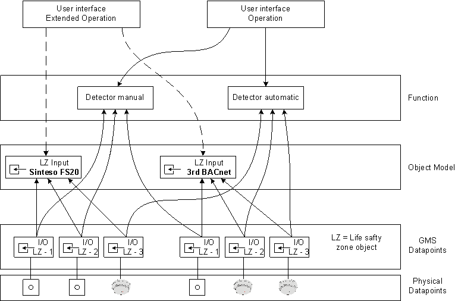
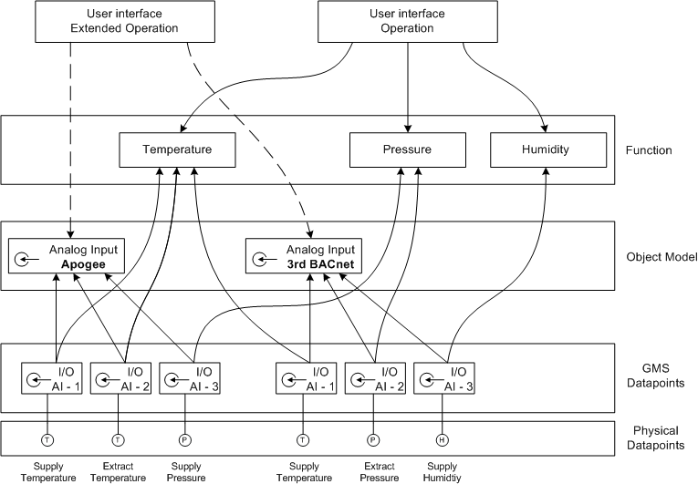
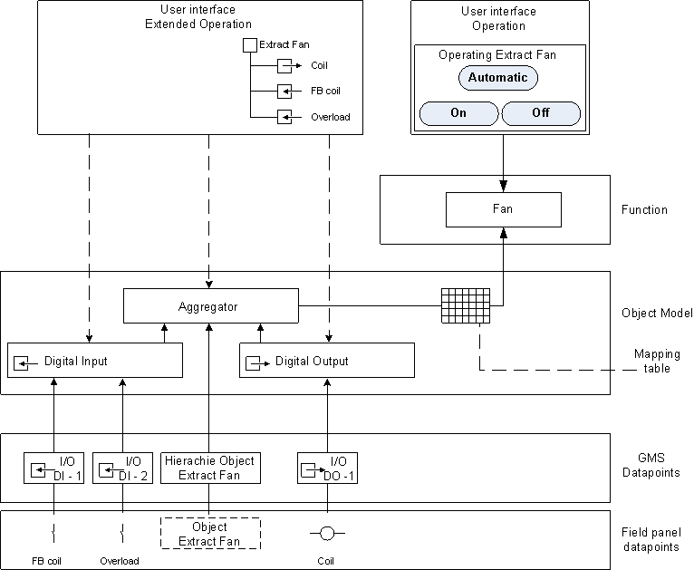
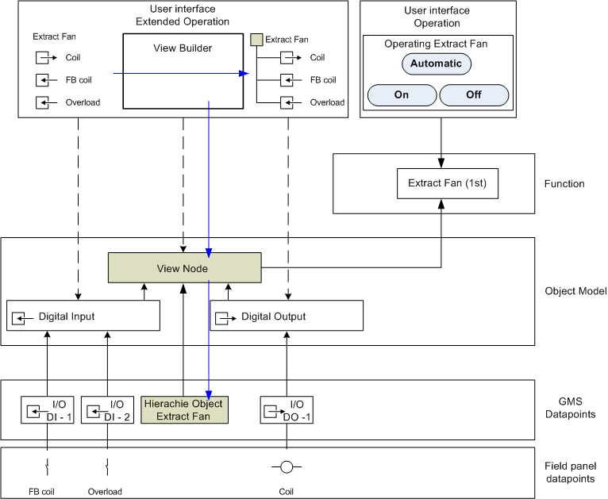

Example: Data Processing for Applications
The following section displays some examples of the data relationship from Object Model and Function to the Operation and Extended Operation tabs.
Fire Detector

Sensors

Motor (with Object Hierarchy)
A corresponding hierarchy object is generated during database import if an object hierarchy exists during programming of a complex function (for example, pump, fan).

Motor (without Object Hierarchy)
The object hierarchy is created manually using the view builder if no automatic object hierarchy is generated during data import. When creating an object hierarchy, a View node is created as Object Model as well as an additional Desigo CC hierarchy object. This permits the use of the same function as for a hierarchical object.
